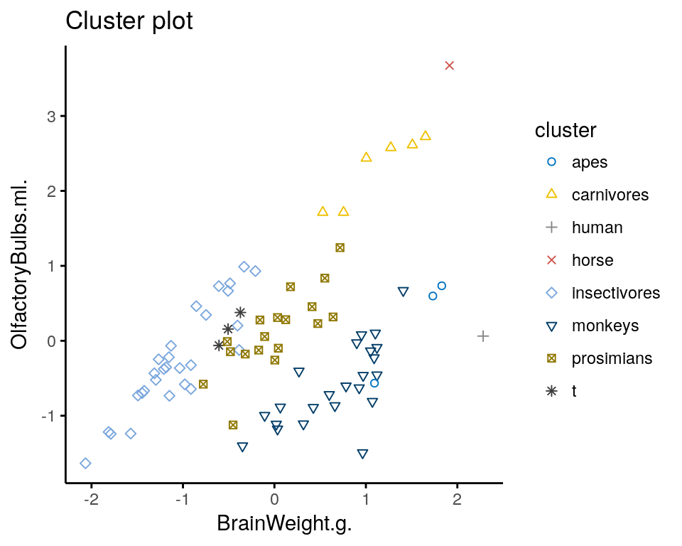

En los métodos de agrupación jerárquicos y partitivos que hemos visto, los centros de los clusters son puntos. Uno puede pensar en puntos como hiperplanos de dimensión cero. Van Aelst et al. (2006) propusieron un algoritmo (LGA) para encontrar clusters alrededor de hiperplanos de baja dimensión (puntos, rectas, planos, etc). Posteriormente, García-Escudero et al. (2009) desarrollaron una versión robusta.
En biología, la alometría se refiere a los cambios de dimensión relativa de las partes corporales correlacionados con los cambios en el tamaño total. Es de interés para los biólogos estudiar la relación entre el tamaño de los órganos para distintas especies. Generalmente, cuando el tamaño de un órgano es grande, los otros órganos del cuerpo también lo son. Por ejemplo, un cuerpo grande, requiere un cerebro grande, y estas relaciones son impulsadas por el proceso evolutivo.
En estos datos, estudiados por Van Aelst et al. (2006), se tiene información sobre el peso del cerebro y el volumen del bulbo olfatorio en 83 especies de mamíferos, agrupadas según familias.

Típicamente, existe una relación lineal entre los tamaños de los órganos en los animales. Sin embargo, estas relaciones no son las mismas entre diferentes familias debido a los hábitos de vida, el ambiente, las fuentes de alimento, etc. Por tanto, es necesario agrupar nuestros datos de acuerdo distintos patrones lineales.
lga# We install the required package
if(!require("lga"))install.packages("lga")
library(lga)
# Load and transform the data
data(ob)
ob$BrainWeight.g. = log(ob$BrainWeight.g.)
ob$OlfactoryBulbs.ml. = log(ob$OlfactoryBulbs.ml.)
X = scale(ob[,-1])
# Run the clustering algorithm
cl.lga = lga(X, k=2)## LGA Algorithm
## k = 2 biter = 7 niter = 10
##
## Finished.# Print the result
library(ggplot2)
datos =cbind(ob, cluster = factor(cl.lga$cluster))
ggplot(data = datos, aes(x = BrainWeight.g., y=OlfactoryBulbs.ml.,
colour = cluster, label = Group)) +
geom_text() + theme_classic() +
ggtitle("LGA cluster plot with 2 groups")# Run the clustering algorithm w/ 3 groups
cl.lga = lga(X, k=3)## LGA Algorithm
## k = 3 biter = 22 niter = 10
##
## Finished.# Print the result
datos =cbind(ob, cluster = factor(cl.lga$cluster))
ggplot(data = datos, aes(x = BrainWeight.g., y=OlfactoryBulbs.ml.,
colour = cluster, label = Group)) +
geom_text() + theme_classic() +
ggtitle("LGA cluster plot with 3 groups")García-Escudero, Luis Angel, Alfonso Gordaliza, Roberto San Martin, Stefan Van Aelst, and Ruben Zamar. 2009. “Robust Linear Clustering.” Journal of the Royal Statistical Society: Series B (Statistical Methodology) 71 (1). Wiley Online Library: 301–18.
Van Aelst, Stefan, Xiaogang Steven Wang, Ruben H Zamar, and Rong Zhu. 2006. “Linear Grouping Using Orthogonal Regression.” Computational Statistics & Data Analysis 50 (5). Elsevier: 1287–1312.